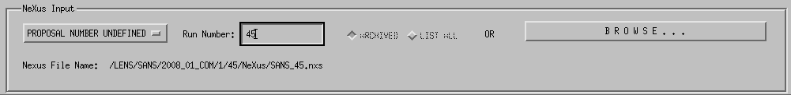
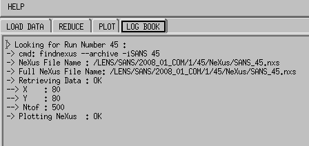

Load a Files

This is the part of the GUI you use to load a NeXus file. If findnexus
is in your path (check first line of log book for that), you can enter a run
number next to the Run Number label and hit ENTER
. If the NeXus file is found, its file name is displayed next to the
labelNexus File Name. If you know your proposal
number, you can select this one in the proposal droplist. This will speed up
the search of the NeXus via findnexus.You can also used the
BROWSE button to look for your NeXus file.
Once the NeXus file has been located, the data are plotted. Don't forget to
check the LogBook to get a more precise description of the process.
